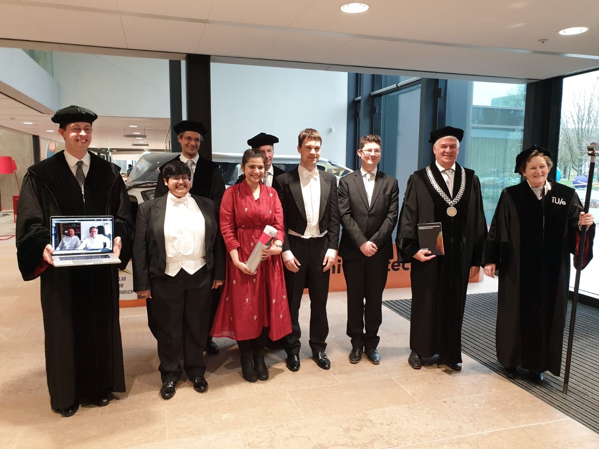

7 Sep. 2020
Computational Mechanics & Advanced Materials (CompMech) group at University of Pavia published a news-article about my current (work-in-process) research work towards scan-based immersed isogeometric analysis. It is an honor to be part of the research group with a great minds and social dynamics. Thanks to Erasmus Mundus for the exchange opportunity.
22 June 2020
At Technical University Eindhoven (TU/e), I have been involved in a master level course called, Advanced Discretization Techiniques (ADT), to assist Clemens Verhoosel (responsible lecturer) with the instruction-hours, where we assist students to under the concepts of the course and to grade the in-between and final assessment components. Last year (2019), I have noticed that the advanced level topics in the course, students would be ready to perform a real-world computational problems. However, the existing final assessment component was designed based on an abstract or an academic problem. Hence the connection to a real-time application was missing. After this realization, I proposed to Clemens, that it would be nice to redesign the final assessment component to a challenge-based style. He appreciated the idea and gave me a chance to redesign it. We called it simulation-challenge.
In this challenge, we collected a few real-time cases from a few companies, for example Siuox-Lime, Reden, Evalf, Canon printing production, etc., and gave a real-time problem to student groups (each containing two students) in the second week of the course. The groups shoudl pitch an idea in the third week. We assess the pitch with a green, orange and red light. That means with a green light: students are good to go, organe light: students need a minor considerations, red light: they missed-out something major and need to reconsider their proposal and get back to us with-in a week. After the third week, students have another five weeks to work on it. We monitor them closely and let them steer their own projects. At the end of the eighth week, they would present their final proposal to jury-members and submit a report.
Due to COVID-19, we had to do the pilot version online starting on 20 April 2020. Today, we have wrapped up assessing the reports and presentations. Despite the online implementation, I think the simulation-challenge went well with an average grade of 80%. I have observed students enjoying it while brainstorming together with their peers. I have also enjoyed the discussions with them during the instruction-hours twice a week. Thanks to the jury-members from the above mentioned companies in helping us assess the projects not only to academic-level but also to the industry-level. Thanks to Clemens for givng me this opportunity to design a challenge-based assessment component. A point to mention is that the students and companies also made a network thorugh this course and a couple of studetns joined of the companies to perform their final thesis as an intern in the company. Of course, we have a minor fixes to do for the next year implementation and hopefully, we can do it on-campus.
27 May. 2020
Computational Mechanics & Advanced Materials (CompMech) group at University of Pavia published a news-article about my scientific publication on "Error-estimation-based adaptive integration for immersed isogeometric analysis". The research work for the article was conducted in collaboration with Eindhvoen university of technology (TU/e) under the supervision of Dr. Clemens V. Verhoosel, Prof. E. Harald van Brummelen, Prof. Alessandro Reali, and, Prof. Ferdinando Auricchio. It is sponsored by Erasmus Mundus under joint doctorate program called Simulation Engineering and Entrepreneur Development (SEED). Thanks to Erasmus Mundus for the funding and exchange opportunity.
10 Mar. 2020
Hasini Garikapati, one of my colleagues and a dear friend, successfully defended her doctoral thesis on "Computational uncertainty quantification in pressure-driven fracture processes" and graduated with flyring colors. I am very glad that the official ceremony was possible as it was just before the COVID-19 lockdown. It was a great pleasure to be one of her paranymphs. I wish her a good luck with all the future endeavours.
Together with the defense committee after the graduation ceremony. Source: Vinoth Krishnan Elangovan (husband of Hasini)
10 Feb. 2020
Couple of the key contributors of the Finite Cell Method (FCM) and Isogeometric Analysis (IGA) community, Prof. Alexander Düster and Dr. Clemens V. Verhoosel, visited Pavia on February 10th. In this occasion, I (on behalf of CompMech group) have arranged a one-day workshop on the current challenges in FCM, especially focused on the issues like integration, application to Additive manufacturing and high Reynolds number flow problems.